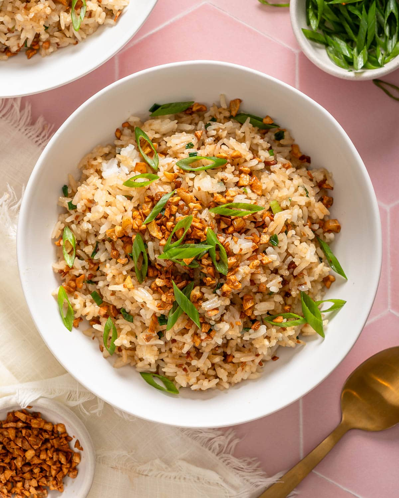

| Time |
Monday |
Tuesday |
Wednesday |
Thursday |
Friday |
| Breakfast |
Eggs |
Spam |
Eggs |
Eggs |
Bread |
| Lunch |
Soup |
Burger |
Vegetable |
Rice |
Bread |
| Dinner |
fish |
pork |
Vegetable |
Rice |
shake |

Ingridients
- Leftover rice
- lots of garlic
- oil
- salt
Steps
- step 1: Break apart any clumps with your hands or a fork.
- step 2: Heat oil in a pan over medium heat.
Add minced garlic and cook until light golden brown and fragrant.
Don’t burn it.
- step 3:Put the rice into the pan.
Mix well so the garlic coats the rice evenly.
- step 4: Add salt (and pepper if you like).
Keep stirring and frying for 3–5 minutes.